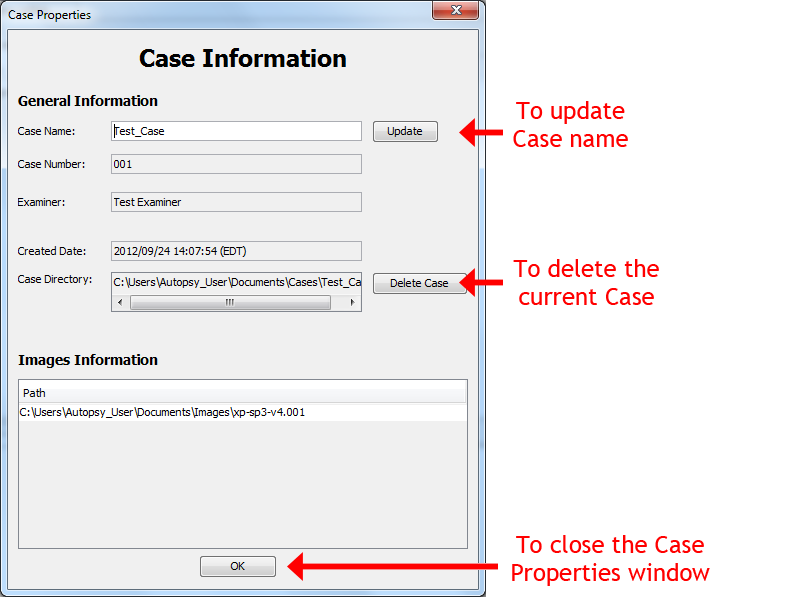

Case Properties Window is the window where you can check some information about the currently opened case (case name, case creation date, case directory, and images in this case.
In this window, you can also do the following things:
To open the "Case Properties" window, go to "File" and then select "Case Properties..."
Here's an example of the "Case Properties" window:
